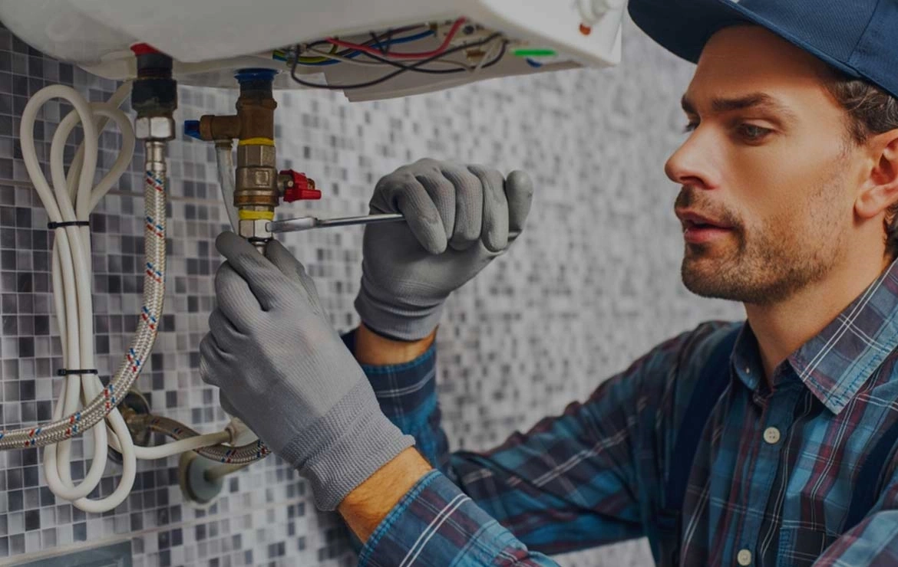
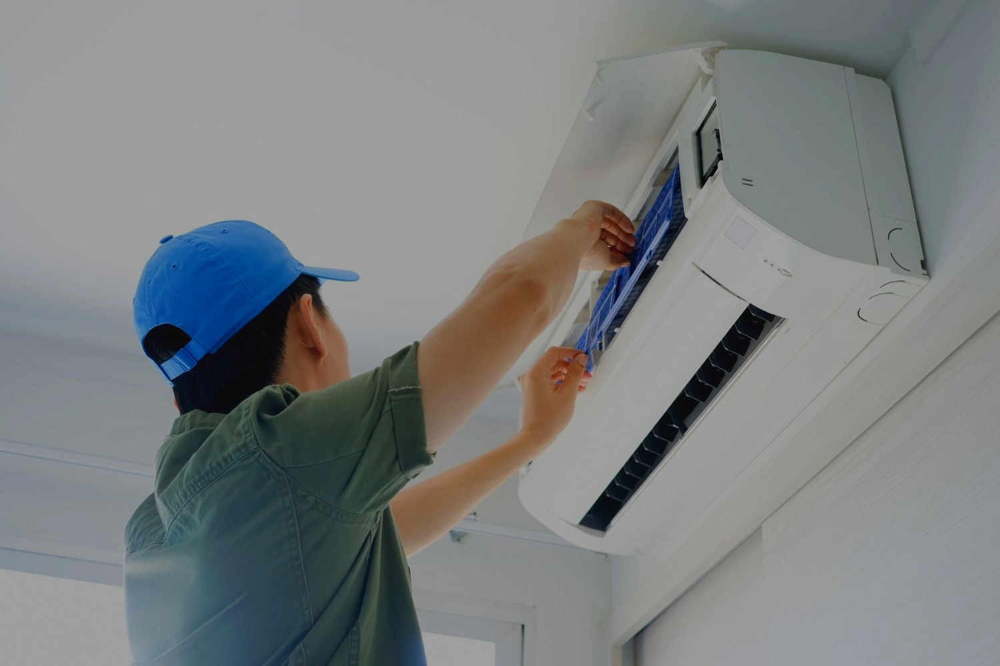

Atendemos en :
Reparación de calderas Saunier en Barcelona

Ofrecemos servicio técnico Saunier en Barcelona especializado en la reparación de calderas y sistemas de calefacción. Nuestros técnicos diagnostican fallos de encendido, problemas de presión, errores electrónicos y averías en el sistema de combustión, garantizando una solución segura y eficaz. Atendemos modelos actuales y antiguos de la marca Saunier, realizando intervenciones a domicilio con rapidez y profesionalidad.
Reparamos todas la marcas de calderas click aquí.
Servicio técnico aire acondicionado Saunier

También realizamos reparación y mantenimiento de aire acondicionado Saunier en Barcelona. Solucionamos problemas como falta de refrigeración, fugas de gas, ruidos anormales o fallos eléctricos, asegurando un funcionamiento óptimo del equipo.
Miramos todas la marcas de click aquí.
Mantenimiento preventivo Saunier
El mantenimiento periódico es fundamental para evitar averías costosas y mejorar el rendimiento energético. Si deseas prevenir problemas en tu equipo, puedes consultar nuestro servicio técnico de calefacción en Barcelona donde realizamos revisiones profesionales completas.
Averías frecuentes en equipos Saunier
Entre las incidencias más habituales encontramos:
- La caldera Saunier no enciende
- Pérdida de presión en el sistema
- Radiadores que no calientan
- Aire acondicionado Saunier que no enfría
- Ruidos extraños en la unidad interior
Nuestros técnicos ofrecen diagnóstico profesional y reparación garantizada.
Contacto


Agréguenos a WhatsApp o envíe consultas para obtener una respuesta instantánea.
612 598 512
Escribenos
Para contactarnos mediante correo electrónico o dejarnos tu comentarios serviciotec.comercial@gmail.com
correo